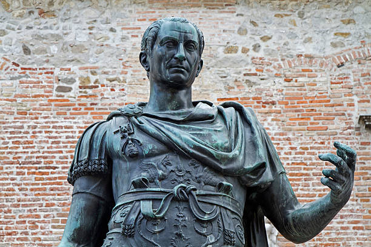

The Rise and Fall of the Roman Empire
The Roman Empire was one of the most influential civilizations in human history. At its peak, it controlled vast territories across Europe, North Africa, and the Middle East, shaping the development of law, politics, architecture, and culture.
Its legacy still influences the modern world today, from government systems to roads and languages.
How did Rome begin?
According to legend, Rome was founded in 753 BCE by Romulus and Remus. While the story is mythological, historians believe Rome actually began as a small settlement along the Tiber River.
Over time, it grew into a powerful city-state influenced by neighboring civilizations like the Etruscans and Greeks.
The Roman Republic
Before becoming an empire, Rome was a republic. Power was held by elected officials, including the Senate.
This system allowed citizens to participate in governance, although it was still limited to certain groups.
During this period, Rome expanded rapidly through military conquest and alliances.
Julius Caesar and the end of the Republic
One of the most famous figures in Roman history is Julius Caesar. He was a powerful general and politician who played a key role in Rome’s expansion.
His rise to power led to political conflict, and in 44 BCE, he was assassinated by members of the Senate.
The Roman Empire begins
After Caesar’s death, his adopted heir Augustus became the first emperor of Rome in 27 BCE.
This marked the beginning of the Roman Empire, a period of centralized rule and unprecedented expansion.
The empire entered a long period of peace known as the Pax Romana, lasting about 200 years.
Life in the Roman Empire
Roman society was highly advanced for its time. The empire built roads, aqueducts, public baths, and massive architectural structures like the Colosseum.
Latin, the language of Rome, became the foundation for many modern languages including Italian, French, Spanish, and Portuguese.

This shows the architectural greatness of Rome, especially structures like the Colosseum that still stand today.
Why was Rome so powerful?
Rome’s strength came from its disciplined army, advanced engineering, and ability to adapt ideas from conquered cultures.
Its roads connected distant regions, enabling trade, communication, and military control across vast distances.
The decline of the Roman Empire
The empire eventually began to weaken due to political instability, economic problems, and external invasions.
In 476 CE, the Western Roman Empire officially fell when the last emperor was overthrown.
The Eastern Roman Empire, known as the Byzantine Empire, continued for nearly another 1,000 years.
Why did Rome fall?
There was no single reason. Instead, a combination of factors led to its collapse:
Economic decline, corruption, military overextension, and pressure from invading tribes all contributed.
Legacy of the Roman Empire
Even after its fall, Rome’s influence remained strong. Modern legal systems, architecture, and government structures are deeply inspired by Roman ideas.
The concept of democracy, engineering techniques, and urban planning all trace roots back to Rome.
Why this history matters
Studying Rome helps us understand how civilizations grow, succeed, and eventually decline.
It also shows how ideas from the past continue to shape our present world.